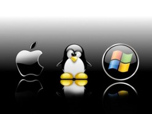
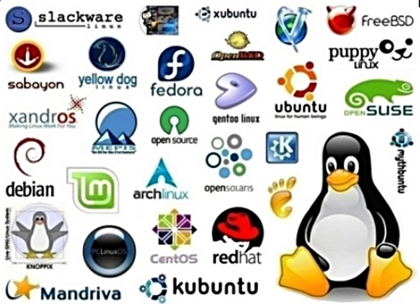
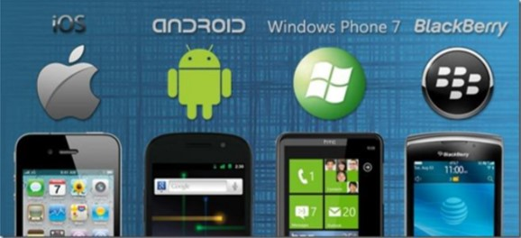
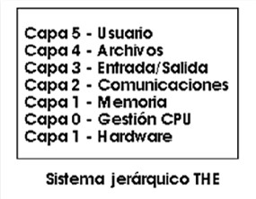
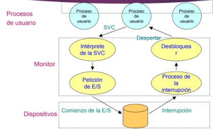

Modulo 4
Sistema Operativo
Sistemas Operativos
14-05-2022
El sistema operativo es un tipo de software encargado de la administración de los
recursos de la computadora tanto del hardware como de otros softwares, siendo este
el que sede los permisos para que dichos programas puedan acceder a los recursos, y
luego se encarga de ordenar las instrucciones de manera jerárquica para no
sobrecargar el CPU. Para abreviar se usan las siglas OS (Operative System),
encargado de las labores básica del sistema y del manejo de recursos, es debido a
esto que es el componente mas importante de la computadora, es tal su importancia
que sin este la computadora no prendería o tendría una interfaz gráfica, ya que
también se encarga de esto, siendo el cambio mas notable cuando hay actualizaciones
de OS.
Este ya viene instalado en los dispositivos, y me refiero a dispositivos, ya que
tanto ordenadores como celulares usan un OS para ejecutar los programas. Gracias
a este se puede realizar las ordenes de acuerdo con lo que desea el usuario usando
la interfaz gráfica, que es donde podemos tocar, clickear botones o arrastrar
archivos, entre otras acciones comprensibles para el usuario. Ejemplos de familias de sistemas
operativos: Windows, Unix, Linux, DOS, Mac OS, etc.
Un sistema operativo permite interactuar con
el hardware de computadoras, teléfonos celulares,
PDAs, etc.
|  |  |  |
Servicios que ofrece
Los sistemas operativos sin importar la versión o el tipo cuentan con ciertos servicios en común para el usuario, uno de ellos es la capacidad de poder ejecutar lo programas instalados en el computador como se menciono anteriormente, administrando los recursos necesarios para que estos funcionen, también provee operaciones de E/S (entrada y salida) a los programas ya que estos no cuentan con esa función. El servicio de manipulación CRUD (Create, Read, Update, delete) de archivos también lo manipula el sistema operativo, junto a este también manipula los servicios de comunicación entre el mismo computador o en una red. Y por último el OS detecta los errores que pueden ocurrir con algunos procesos o componente de la computadora.Tipos de Estructuras de un Sistema Operativo
Monilitica
Esta es la estructura de los primeros sistemas operativos, esta constituía en un solo programa compuesto de un conjunto de procedimientos entrelazados, de tal forma que cada uno pudiera llamarse entre sí. Generalmente estas hechas a la media, por lo que eran rápidos y eficientes en su ejecución y gestión, pero ese sería su talón de Aquiles, ya que eran poco flexibles para distintos trabajos.La arquitectura Monolitica cuenta con tres caracteristicas basicas:- Construcción del programa final a base de módulos compilados separadamente que se unen a través del ligador.
- Buena definición de parámetros de enlace entre las distintas rutinas existentes, que puede provocar mucho acoplamiento.
- Carecen de protecciones y privilegios al entrar a rutinas que manejan diferentes aspectos de los recursos de la computadora, como memoria, disco, etc.
De capas
A medida que las necesidades de los usuarios fueron creciendo se hizo necesaria una mejor organizacióndel software del OS, ahora en estos modelos el OS contiene subparte y esta organizado en forma de niveles. La subdivisión que se hizo fue para que cada una de esas partes estuvieran bien definidas y con un claro interface con el resto de los elementos, por lo que se construyo una estructura mas jerárquica. Siendo este el primero, denominado THE (Technische Hogeschool Eindhoven),tambien se puede pensar como un modelo de multicapas.
Cliente-Servidor (Microkernel)
Es el tipo mas reciente de sistema operativo, este puede ser ejecutado en la mayoría de las computadoras ya sea simples o potentes. Este OS sirve para cualquier clase de aplicaciones, por lo tanto, cuenta con características similares a la de los otros OS, pero este posee un núcleo llamado Microkernel, que tiene como propósito establecer comunicación a los servidores. De allí el nombre ya que puede manejar procesos tanto servidores como clientes, ofreciendo una gran flexibilidad en cuanto a los servicios posibles en el sistema final a pesar de eso el núcleo solo posee funciones básicas de memoria, procesos de E/S, archivos y procesos, lo que deja que los servidores puedan proveer más que el usuario final puede usar.
Componentes
| Gestor de Memoria | Es el encargado de asignar y designar memoria a los programas, conociendo el momento donde se esta utilizando la memoria y quien la está usando, también es la que decide los servicios de memoria que le ofrecerá a cada proceso. |
| Gestor de archivo | Es el componente encargado de la colección de archivos por nombre y el que permite modifica, crear o eliminar archivos, tambien es que hace el servicio de backup. |
| Gestor de E/S | Los OS modernos proporcionan una I/F estándar entre los programas y los dispositivos, es decir, utilizan las mismas funciones independientemente del dispositivo. |
| Sistema de Protección | Este controla los accesos de los programas, procesos y usuarios al sistema o a los recursos de la computadora, este distingue entre los servicios autorizados y no autorizados, especificando que control se debe de imponer. Este componente no está localizado en el núcleo, sino que es un mecanismo de defensa general de todos los OS. |
| Interprete de ordenes | Proceso que maneja la interpretación de órdenes del usuario desde un terminal, para utilizar los servicios que proporciona el SSOO. |

Actividades del Modulo
|

© 2022 Grupo5
© Derechos reservados